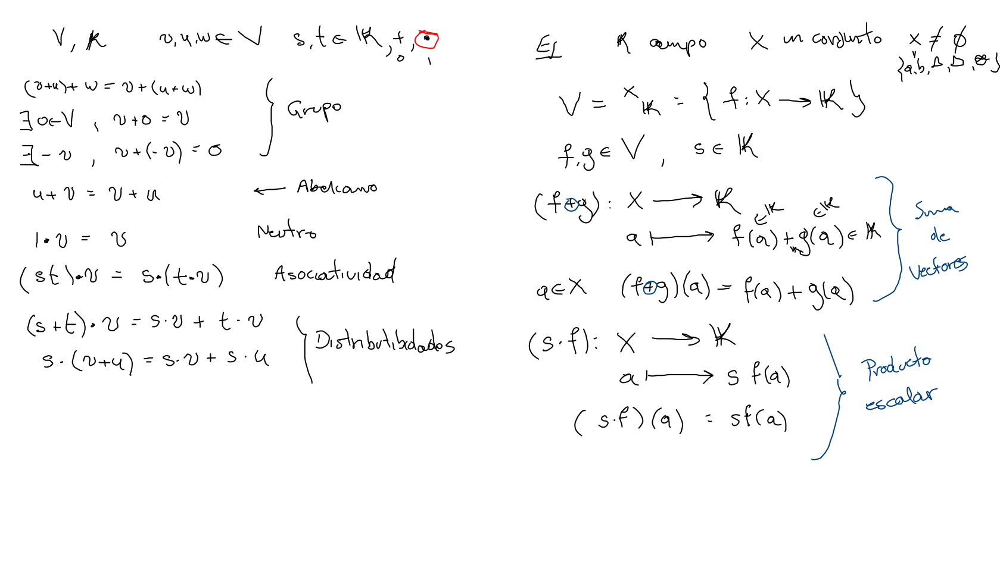
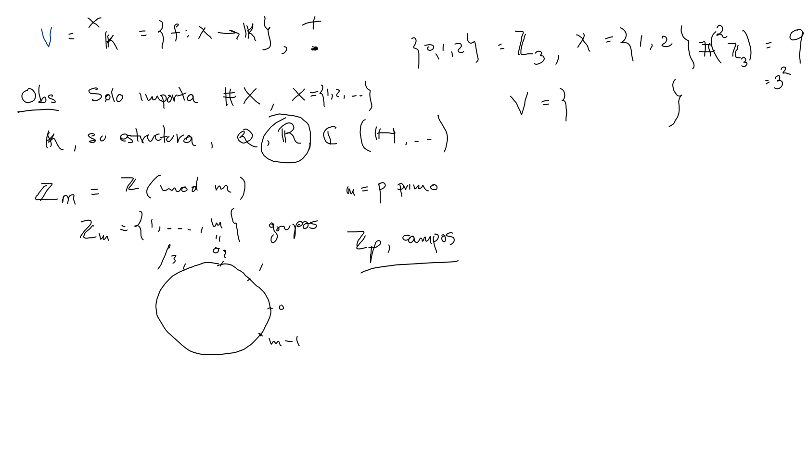
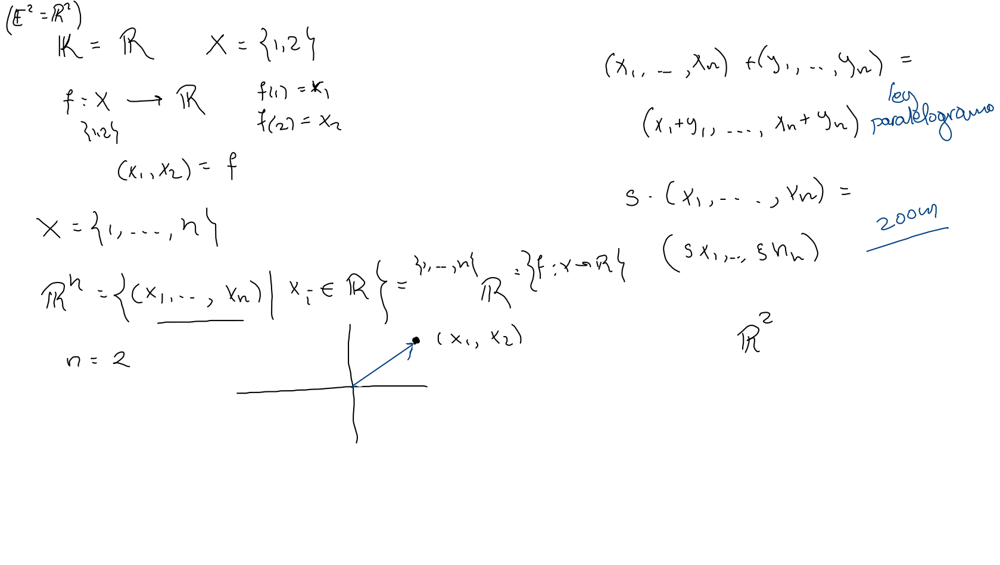
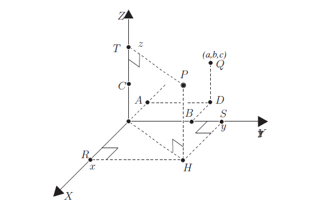
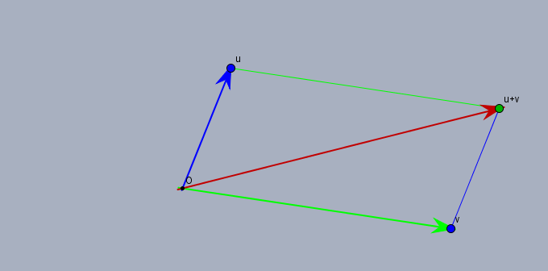

Dado un conjunto X, consideramos V=XF={f:X→F}

Del conjunto X sólo es relevante su cardinalidad, K su estructura, incluso, puede ser finito.
 Ejercicio(Z3)2
Rn
El ingrediente ahora es el campo ordenado (completo) de los números reales (R,+,⋅,≤), usamos X={1,⋯,n} en el ejemplo anterior.
Así como para el plano usamos parejas de números para representar un punto (E2=R2), generalizamos a dimensiones mayores simplemente aumentando más coordenadas, de esta manera, definimos para cualquier número natural n.
Rn={(x1,⋯,xn)∣xi∈R,i=1,⋯,n}
(f∈{1,..,n}R;f(i)=xi)

El conjunto de las n-adas de números reales puede ser ahora identificado con En el espacio Euclidiano de dimensión n. En el curso trabajaremos n=2 y 3.

Suma
Dados dos vectores x=(x1,…,xn) y y=(y1,…,yn), en Rn, la suma la hacemos coordenada a coordenada:
(x1,…,xn)+(y1,…,yn)=(x1+y1,…,xn+yn)
Para el caso n=2, simplemente:
(a,b)+(c,d)=(a+c,b+d)
Geometricamente: Ley del paralelogramo 
Producto escalar
Dado un vector x=(x1,…,xn) en Rn y un escalarλ en el campo R, el producto es multiplicando cada coordenada por el escalar, esto es: